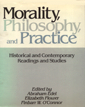

The history of ethics and its methods
The history of ethics and its methods


 The history of ethics and its methods
The history of ethics and its methods

|  |
Morality, Philosophy, and PracticeHistorical and Contemporary Readings and Studiesedited by Abraham Edel, Elizabeth Flower and Finbarr W. O'Connorcloth EAN: 978-0-87722-591-1 (ISBN: 0-87722-591-5) |
At a time when practically every new field and invention appears to generate ethical questions—"computer ethics," "media ethics," "environmental ethics"—and the field of applied ethics is gaining increased public interest, it becomes important to take a fresh look at the history of ethics and its methods. By presenting ethics in its institutional setting and institutional application, Morality, Philosophy, and Practice mediates between ethical theory and concrete situations. Extensive introductory essays by the editors place the reprinted works in social and political perspective and describe literature of the period that is not represented in the collection. The book provides generous extracts, and it treats numerous figures and groups that are omitted from other histories. The book should speak both to those who focus solely on the theoretical and to those whose interest is in the application.
The anthology includes extracts from the works of Plato, Aristotle, Zeno, Cicero, Seneca, Epictetus, Marcus Aurelius, Epicurus, Lucretius, Plotinus, Job, Matthew, Augustine, Peter Abelard, Thomas Aquinas, William Ockham, Thomas Hobbes, Ralph Cudworth, Henry More, Samuel Clarke, Richard Cumberland, John Locke, Joseph Butler, David Hume, Adam Smith, Jean-Jacques Rousseau, Olympe de Gouges, Richard Price, Edmund Burke, Thomas Paine, Mary Wollstonecraft, Jeremy Bentham, Immanuel Kant, G.W.F. Hegel, Karl Marx, Frederick Engels, John Stuart Mill, Charles Darwin, Herbert Spencer, T.H. Huxlie, Friedrich Nietzsche, Peter Kropotkin, T. H. Green, F. H. Bradley, Bernard Bosanquet, G. E. Moore, John Maynard Keynes, A. J. Ayer, Charles Leslie Stevenson, P. H. Nowell-Smith, J. L. Austin, H. L. A. Hart, Philippa R. Foot, John Dewey, C. I. Lewis, Nicolai Hartmann, Frithjof H. Bergmann, Karl Duncker, Martin Buber, Jean-Paul Sartre, Felix S. Cohen, Ronald Dworkin, Lawrence C. Becker, Carol Gilligan, John Rawls, and David Braybrooke.
Abraham Edel is Research Professor of Philosophy at the University of Pennsylvania and Distinguished Professor of Philosophy Emeritus at City University of New York. He has also written The Struggle for Academic Democracy: Lessons from the 1938 Revolution in New York's City Colleges (Temple).
Elizabeth Flower is Professor of Philosophy Emeritus at the University of Pennsylvania.
Finbarr W. O’Connor is Associate Professor and Chair of the Department of Philosophy at Beaver College. Together they have also written Critique of Applied Ethics: Reflections and Recommendations (Temple).
© 2015 Temple University. All Rights Reserved. This page: http://www.temple.edu/tempress/titles/636_reg.html.